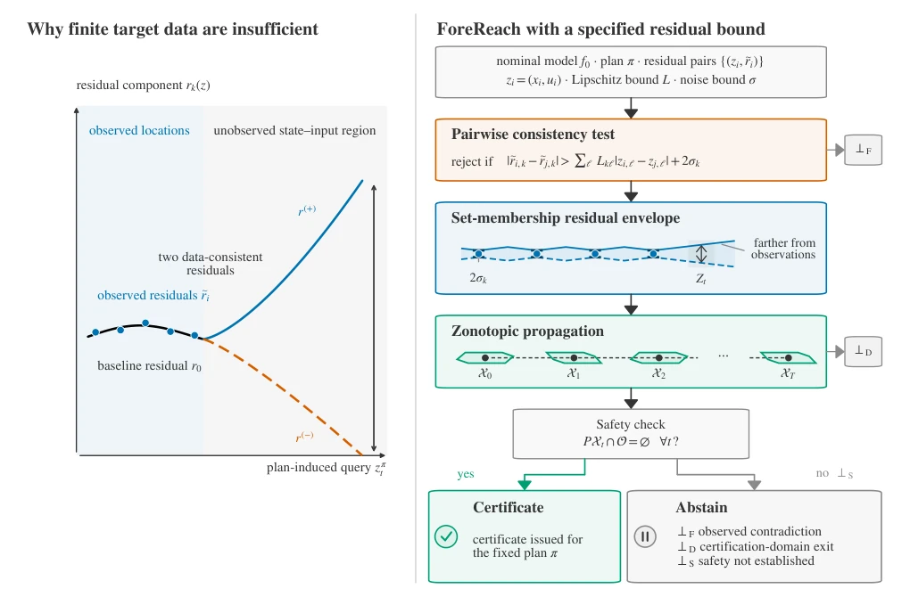
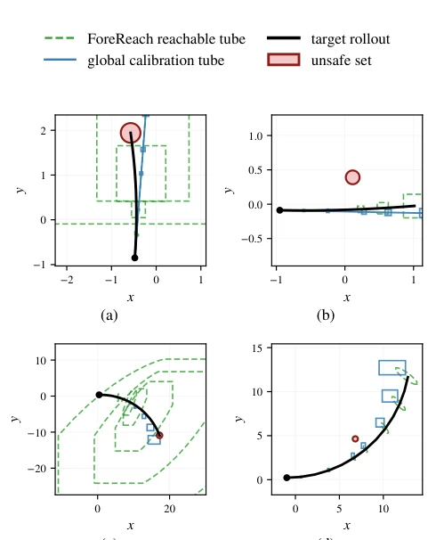

这篇论文给“仿真到真实”的盲目乐观泼了盆冷水，直接撕开了稀疏数据下安全认证的面纱。作者证明了一个残酷的“三元悖论”：在数据稀缺时，你要么保证所有模型都安全（但管状体无限宽，没用），要么保证管状体窄（但可能漏掉危险模型），要么干脆别碰数据外的区域。ForeReach 是个诚实的裁判，它不瞎猜，但要求你先签个“李普希茨常数”的卖身契。虽然理论硬核，但依赖外部先验这点在工程上挺让人头大，毕竟 L 界很难精确知道，一旦声明错误（如 Section 5.4 所示），反而会导致虚假安全。不过至少它比那些盲目自信的基线强，至少知道什么时候该闭嘴，避免了“虚假安全”的致命伤，这在安全关键系统中比盲目乐观更有价值。
This paper pours cold water on the blind optimism of "Sim-to-Real", directly tearing open the veil of safety certification under sparse data. The authors prove a cruel "trilemma": when data is scarce, you either guarantee all models are safe (but the tube is infinitely wide, useless), or guarantee the tube is narrow (but may miss dangerous models), or simply do not touch areas outside the data. ForeReach is an honest referee; it does not guess blindly but requires you to sign a "Lipschitz constant" commitment first. Although theoretically rigorous, relying on external priors is quite challenging in engineering, as the L bound is hard to know precisely; once declared incorrectly (as shown in Section 5.4), it instead leads to false safety. However, at least it is superior to those blindly confident baselines, at least knowing when to abstain, avoiding the fatal flaw of "false safety", which is more valuable in safety-critical systems than blind optimism.
研究动机Motivation
仿真策略部署到真机时，模型误差是致命伤。现有方法如 Conformal Prediction (Barber et al. 2023) 或 Lipschitz Reachability (Alanwar et al. 2023) 往往依赖轨迹数据或更多假设，难以处理孤立单步转移。本文针对的是更棘手的“孤立单步转移”数据，且策略输出是固定动作块（如 ACT, Diffusion Policy）。在这种设定下，传统方法要么在数据外失效，要么产生过宽的不确定集。作者指出，仅凭稀疏数据无法同时满足均匀声性、有限宽度和无界误差，这揭示了信息论层面的根本限制。Srinivasan et al. (2026) 的 MPC 预算在小样本下也失效，凸显了本问题的难度。这迫使研究者必须引入外部结构假设，而非单纯依赖数据驱动。
When simulation policies are deployed to real machines, model error is a fatal flaw. Existing methods such as Conformal Prediction (Barber et al. 2023) or Lipschitz Reachability (Alanwar et al. 2023) often rely on trajectory data or additional assumptions, making it difficult to handle isolated single-step transitions. This paper targets the more challenging "isolated single-step transition" data, where policy outputs are fixed action blocks (e.g., ACT, Diffusion Policy). Under this setting, traditional methods either fail outside the data or produce uncertainty sets that are excessively wide. The authors point out that relying solely on sparse data cannot simultaneously satisfy uniform soundness, finite width, and unbounded error, revealing fundamental limits at the information-theoretic level. Srinivasan et al. (2026)'s MPC budget also fails under small samples, highlighting the difficulty of this problem. This forces researchers to introduce external structural assumptions rather than relying solely on data-driven approaches.
ForeReach's pipeline begins with a hard constraint: the user must provide a component-wise Lipschitz bound L, which serves as an external prior rather than being learned from data. The first step of the process is a pairwise consistency test, checking if observed residuals violate L; once violated, it is immediately rejected (⊥F). The second step constructs a set membership envelope, utilizing the McShane extension theorem and noise bounds to generate residual intervals for each query set. The third step is Zonotopic propagation, combining the linearized Jacobian of the nominal model f0 with the residual envelope to generate a Zonotope tube for the next state. This involves handling interval bounds for nonlinear Taylor remainder terms. The fourth step is safety and domain check; if the tube exceeds the certified domain Zcert or the projection width exceeds the safety threshold, it is rejected (⊥D or ⊥S). The core lies in that it does not attempt to fit the error distribution, but performs worst-case enveloping based on the L bound, ensuring that all consistent residuals are included under the premise that L holds.

Figure 1: Finite observations admit data-consistent residuals that separate at an unobserved plan query. With a supplied Lipschitz bound, our method checks observed contradictions, propagates a set-membership residual envelope, and returns a certificate or a cause-labeled abstention.
实验Experiments
在点质量和动态自行车系统上测试。对比了全局校准、高斯过程等基线。指标包括完整管覆盖率和认证召回率。结果显示，ForeReach 在数据支持区外（unsupported）覆盖率 100%（即不认证），而基线常给出虚假安全。在支持区（corridor），随着数据增加，召回率从 0.49 升至 0.98。证明了“诚实拒绝”比“盲目自信”更安全，且认证质量依赖于数据分布而非单纯数量。错误声明 L 界会导致虚假认证，强调了先验的重要性。此外，针对学习策略生成的动作块也进行了验证，表明 abstention 与距离数据远近强相关。
Tested on point mass and dynamic bicycle systems. Compared baselines such as global calibration, Gaussian processes, etc. Metrics include full tube coverage rate and certification recall rate. Results show that ForeReach has 100% coverage outside the data support region (unsupported) (i.e., no certification), while baselines often give false safety. In the support region (corridor), as data increases, recall rate rises from 0.49 to 0.98. This proves that "honest rejection" is safer than "blind confidence", and certification quality depends on data distribution rather than just quantity. Incorrect declaration of the L bound leads to false certification, emphasizing the importance of priors. Additionally, verification was conducted on action blocks generated by learned policies, indicating that abstention is strongly correlated with distance from data.

Figure 2: Certification geometry in position space. Panels (a) and (b) show the point-mass system, and panels (c) and (d) show the dynamic-bicycle system, with positions in meters. In the unsupported panels (a) and (c), the global-calibration tube remains narrow while the target rollout reaches the un- safe set, and our method returns no certificate. In the corridor panels (b) and (d), relevant residual observations tighten the green reachable tube of our method and enable certification. The green slices are linear position projections of the propa- gated zonotopes of our method.